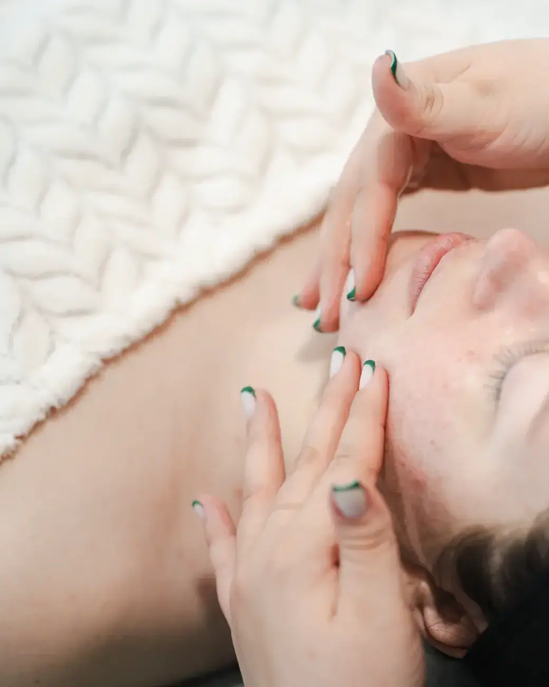
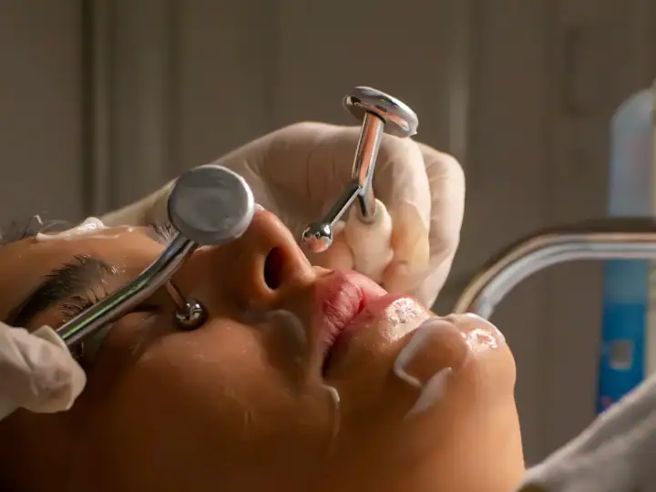
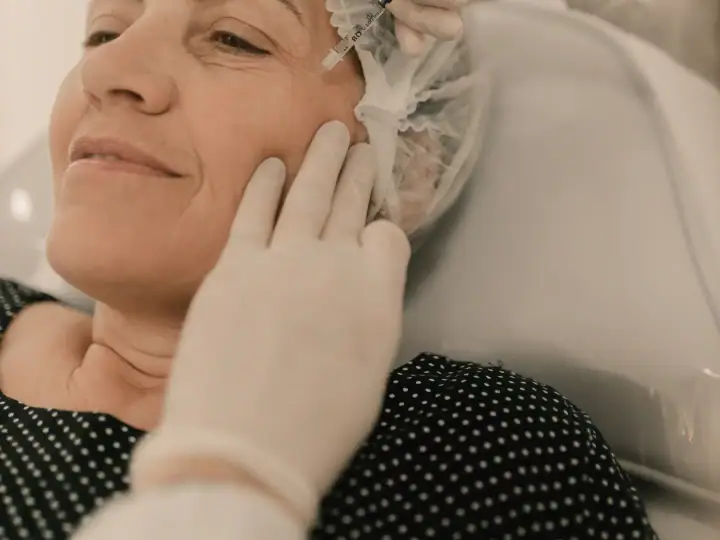
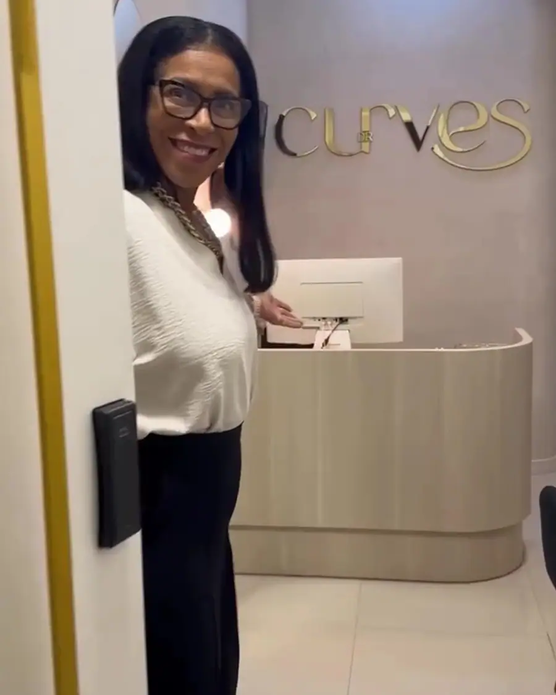

01
Tratamentos corporais
Protocolos para gordura localizada, flacidez e celulite, combinados de acordo com a sua avaliação.
Agendar avaliaçãoEstética avançada no Centro · Florianópolis
Estética corporal, facial e íntima com tecnologia de ponta e um atendimento que entende as suas necessidades e possibilidades. Nota 4,9 com 153 avaliações no Google.

Corporal · facial · íntima
Escolha o procedimento e fale direto com a clínica da Dra. Flávia Curvello. A mensagem já vai pronta no WhatsApp.
Protocolos para gordura localizada, flacidez e celulite, combinados de acordo com a sua avaliação.
Agendar avaliação
Tecnologias para firmeza da pele, flacidez e rejuvenescimento, sem cortes.
Agendar avaliação
Hidratação, massagem e ativos para devolver o viço e o brilho natural da pele.
Agendar avaliação
Higienização profunda, extração e hidratação para a pele respirar, com o protocolo certo para o seu tipo de pele.
Agendar avaliação
Conjunto de procedimentos planejado em conjunto, para realçar o rosto sem perder a sua identidade.
Agendar avaliação
Massagem que ajuda a reduzir o inchaço e a retenção de líquido, com sensação de leveza.
Agendar avaliação
Na Planet Tower, a Dra. Flávia e a equipe recebem você com hora marcada, explicam cada protocolo e acompanham o resultado de perto — do primeiro contato à última sessão.
Primeiro a avaliação, depois o plano. Você entende cada etapa antes de começar.
Conte o que você quer melhorar. A equipe responde, tira as primeiras dúvidas e marca o melhor horário.
A profissional avalia sua pele ou seu corpo, explica as opções e monta um plano com as sessões indicadas.
Você decide com calma e é acompanhada em cada sessão, com orientações para cuidar em casa.
Segunda a sexta: 09h–18h
Avaliações reais de clientes publicadas no Google Maps.
“Cheguei na clínica da Dra Flávia Curvello, através do Instagram. O atendimento maravilhoso, fui bem acolhida pela secretária Josi, que com sua doçura e prossionalismo me atendeu muito bem.”
“Excelente atendimento desde a recepção até os procedimentos! Fui muito bem acolhida, com carinho, atenção e profissionalismo em todos os momentos.”
“Atendimento diferenciado Doutora Flávia muito atenciosa , explica tudo muito bem , tira todas as dúvidas . A assistente Josi ,maravilhosa . Ainda estou terminando meu procedimento ,e assim que finalizando volto para deixar minha opinião.”
“Olá, meu nome é Cristina, minha experiência está sendo muito boa, chegando a olhos vistos ao meu objetivo. O atendimento desde a recepção com a secretária Josi é de excelência.”
“Pensa em um atendimento espetacular. Simplesmente um dos melhores lugares que fui atendida na vida. Super indico, pois além do atendimento da Dra Flávia, a atendente Josy, é extremamente gentil, atenciosa e procura se adequar às nossas necessidades e possibilidades.”
Não achou sua dúvida? Pergunte direto para a equipe no WhatsApp.
A clínica da Dra. Flávia Curvello fica na Edifício Planet Tower - Av. Rio Branco, 404, Centro, em Florianópolis (SC), CEP 88015-200. Pelo botão "Traçar rota" nesta página você abre o caminho direto no Google Maps.
A clínica da Dra. Flávia Curvello atende segunda a sexta, das 09h às 18h. Não abre aos sábados e aos domingos. O agendamento é feito pelo WhatsApp.
É só chamar no WhatsApp (48) 98865-9104 pelo botão "Agendar avaliação". A equipe responde, tira suas dúvidas e marca o melhor horário para a sua avaliação.
Tratamentos corporais, Radiofrequência e aparelhos, Revitalização facial, Limpeza de pele, Harmonização facial e drenagem linfática. O procedimento indicado para você é definido na avaliação.
Para a maioria das pessoas, uma vez por mês. Peles oleosas ou com acne podem precisar de um intervalo menor, o que é definido na avaliação.
É um conjunto de procedimentos, como toxina botulínica, preenchimentos e bioestimuladores, planejado para equilibrar os traços do rosto. O plano é individual e definido na avaliação.
Depende do objetivo. Para inchaço e retenção, costuma-se começar com uma série de sessões semanais. A profissional indica a frequência na avaliação.
Agende sua avaliação na clínica da Dra. Flávia Curvello em poucos minutos pelo WhatsApp.